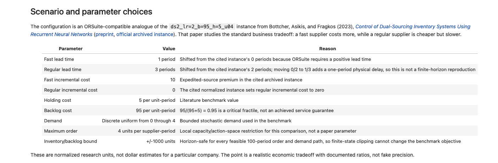
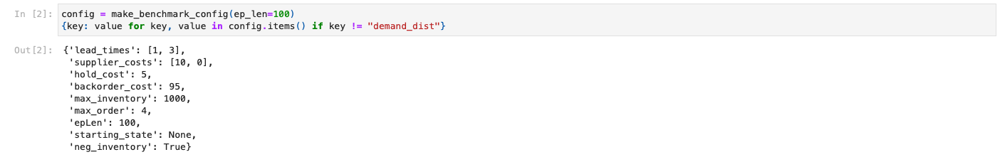
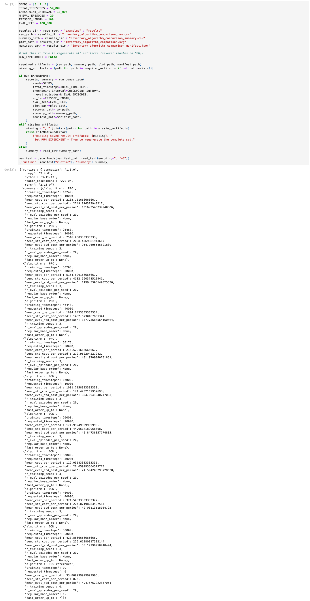
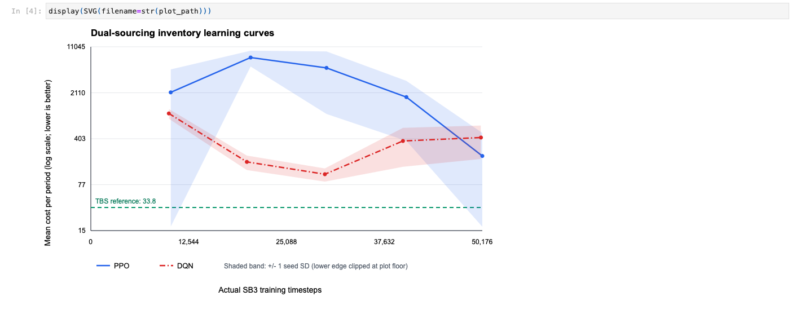
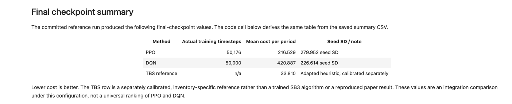
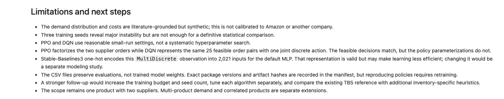

Dual-Sourcing Inventory Benchmark
A reproducible Gymnasium and Stable-Baselines3 comparison for a single-product inventory system with two suppliers, stochastic demand, and delayed replenishment.
The environment in plain English
The agent manages one product and can replenish it from two suppliers. The fast supplier arrives sooner but costs more; the regular supplier is slower but cheaper. Customer demand is random, so every order trades off future shortages against excess inventory.
Four outstanding-order pipeline positions plus current net inventory, represented as five integers.
[fast order, regular order], with each quantity from 0 through 4. There are 25 feasible decisions.
Arrivals enter inventory, random demand occurs, pipelines shift, and ordering plus holding or backlog costs are charged.
What Gymnasium provides
A standard environment interface: reset() starts an episode, step(action) advances one period, and action/observation spaces describe valid inputs and outputs.
What reinforcement learning does
It repeatedly interacts with that interface and learns a policy: a rule mapping the current inventory state to replenishment orders that seek high reward, meaning low cost here.
The MDP pieces
| Piece | Meaning in this environment |
|---|---|
| State | Outstanding orders by pipeline position and encoded net inventory. The last value is offset by 1,000 so the Gymnasium observation remains nonnegative. |
| Action | Two order quantities: one for the fast supplier and one for the regular supplier. |
| Randomness | Independent integer customer demand from 0 to 4 units each period. |
| Reward | The negative of ordering, holding, and backlog cost. Maximizing reward therefore minimizes cost. |
| Episode | 100 periods. The environment truncates at the horizon rather than declaring a terminal business state. |
What happens in one step()
Each must be an integer from 0 through 4.
The fast and regular pipelines carry prior decisions forward.
Seeded randomness makes evaluation scenarios repeatable.
Unfilled demand becomes negative inventory, or backlog.
(observation, reward, terminated, truncated, info).
Specific simulation parameters
These settings create a demanding but interpretable dual-sourcing problem: backlogs are expensive, the faster supplier has a premium, and the slow supplier requires planning several periods ahead.
| Parameter | Value | Interpretation |
|---|---|---|
| Lead times | [1, 3] | Fast supply arrives after 1 period; regular supply after 3. |
| Supplier costs | [10, 0] | Fast orders pay a 10-unit premium; regular supply is the zero incremental-cost reference. |
| Holding cost | 5 | Cost per positive inventory unit per period. |
| Backlog cost | 95 | Cost per unfilled demand unit per period. |
| Demand | Uniform{0,1,2,3,4} | Mean demand is 2 units per period. |
| Maximum order | 4 per supplier | Each period's action is one of 25 order pairs. |
| Inventory bound | ±1000 | Wide encoded bound used by the existing ORSuite environment. |
| Episode length | 100 | One evaluation episode represents 100 inventory periods. |
| Initial state | Empty pipeline, zero net inventory | No inventory or outstanding orders at reset. |
The values are an ORSuite-compatible analogue of the ds2_lr=2_b=95_h=5_u04 dual-sourcing setting described by Böttcher, Asikis, and Fragkos (2023), not a direct reproduction of their experiment. Their archived instance uses lead times 0 and 2; these were shifted to 1 and 3 because this ORSuite environment requires positive lead times.
What the units mean
Costs are normalized research units, not dollars. The regular supplier's zero means no incremental premium relative to the baseline, not that real supply is free.
What not to claim
The 0.95 critical-fractile ratio, 95 / (95 + 5), expresses the backlog-versus-holding tradeoff. It is not a guaranteed 95% service level.


Two Stable-Baselines3 baselines
PPO and DQN use different learning methods, but both can choose from exactly the same 25 inventory decisions. The comparison is an integration benchmark, not a tuned contest or universal ranking.
PPO
Proximal Policy Optimization is an on-policy policy-gradient method. It directly supports ORSuite's native MultiDiscrete([5, 5]) action space.
MlpPolicy,gamma=0.99n_steps=512,batch_size=64n_epochs=10,learning_rate=3e-4
DQN
Deep Q-Network learns action values off-policy. SB3 DQN requires a single Discrete action, so a reversible wrapper maps integers 0–24 to the same 25 order pairs.
MlpPolicy,gamma=0.99,learning_rate=1e-4learning_starts=1000,buffer_size=50000batch_size=64,train_freq=4gradient_steps=1,target_update_interval=10000exploration_fraction=0.3
For DQN, discrete action a decodes to [a // 5, a % 5]. This is a one-to-one mapping, so DQN does not lose any feasible inventory decision. The two algorithms differ only in action representation and learning procedure.
Reward scaling
Training divides the negative cost reward by 100 to improve numerical conditioning. Evaluation uses the original environment with unscaled costs, so the plot and CSV remain directly interpretable.

{kind=link}

How performance was measured
The evaluation separates training randomness from a fixed held-out test set. At every checkpoint, each policy sees the same demand scenarios and is scored using positive, unscaled cost per period.
| Control | Implementation | Why it matters |
|---|---|---|
| Training seeds | 0, 1, 2 | Shows sensitivity to independent model initialization and experience. |
| Checkpoint schedule | Requested every 10,000 timesteps | Measures learning during training rather than only the final model. |
| Evaluation seed | 100000 | Produces fixed held-out demand trajectories shared by algorithms. |
| Episodes per checkpoint | 20 per training seed | Averages over multiple stochastic demand paths. |
| Evaluation policy | Deterministic action selection | Removes action-sampling noise from the comparison. |
| Metric | Mean original cost per period | Comparable to the heuristic and understandable as an inventory objective. |
PPO trains in complete 512-step rollouts. Its actual checkpoints are 10,240; 20,480; 30,208; 40,448; and 50,176 timesteps. The plot reports those exact SB3 counters rather than relabeling them as rounded targets.
Adapted TBS reference
A simple tailored-base-surge policy provides an inventory-specific reference: a regular base order of 1 and a fast order-up-to target of 7. It was selected on separate calibration scenarios using seed 1,100,000, then evaluated on the same held-out scenarios as PPO and DQN.
This is an adapted reference baseline, not a reproduction of a published paper result. It also encodes inventory structure directly, while the neural baselines learn from generic observations, so its comparison is informative but not a claim of identical prior knowledge.
Training timesteps versus performance
The plot uses actual SB3 timesteps on the x-axis and held-out mean cost per period on a logarithmic y-axis. Lower values are better. Shaded bands show variation across the three training seeds.

| Checkpoint | PPO cost/period | DQN cost/period |
|---|---|---|
| ~10k timesteps | 2,138.702 | 1,001.716 |
| ~20k timesteps | 7,516.058 | 174.993 |
| ~30k timesteps | 5,164.829 | 112.031 |
| ~40k timesteps | 1,804.643 | 371.508 |
| ~50k timesteps | 216.529 | 420.887 |
PPO has the lower final neural-policy cost in this run, but DQN is much better at the middle checkpoints and reaches its best value near 30,000 timesteps. Both show substantial instability across seeds, and the adapted TBS heuristic remains clearly stronger. These results verify the training and evaluation pipeline; they do not establish that PPO is universally better than DQN or that either model is tuned.



Limitations and research directions
This benchmark verifies a reproducible Gymnasium-to-SB3 workflow under one controlled inventory configuration. It is not a definitive algorithm ranking or a calibrated deployment study.
What the experiment establishes
- The migrated environment passes Gymnasium validation.
- PPO and DQN can train against the same feasible inventory decisions.
- Held-out evaluation and checkpoint plotting run reproducibly.
- An inventory-specific reference exposes the gap to structured policies.
What remains uncertain
- Three training seeds are not enough for a definitive statistical comparison.
- The algorithms were not independently tuned or trained to convergence.
- Demand and costs are synthetic research units, not company data.
- The setting contains one product and two suppliers only.
Potential next experiments
- Increase the training budget and number of independent seeds.
- Tune PPO and DQN separately under equal evaluation rules.
- Test normalized observations to reduce the 2,021-dimensional one-hot input.
- Compare additional inventory-specific heuristics and policy architectures.
- Evaluate whether zero-period lead times should be supported for closer literature replication.

Run the benchmark from a clean environment
A pinned dependency file, fast smoke mode, saved CSV/SVG outputs, and a provenance manifest make the experiment inspectable without retraining during a presentation.
conda create -n orsuite-inventory python=3.11 pip
conda activate orsuite-inventory
python -m pip install -r examples/inventory_algorithm_comparison_requirements.txt
python examples/inventory_algorithm_comparison.py --smoke-test
jupyter lab examples/inventory_algorithm_comparison.ipynbThe manifest records exact runtime versions and SHA-256 hashes for the implementation and saved artifacts. Full regeneration is available by setting RUN_EXPERIMENT = True in the notebook.

Benchmark source
The configuration is an ORSuite-compatible analogue of the dual-sourcing instance from Böttcher, Asikis, and Fragkos (2023). The archived parameter instance is publicly available.